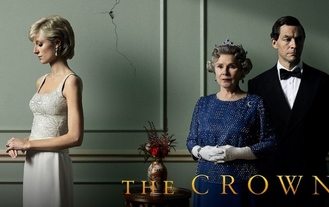

Serial The Crown
The Crown to dobry show! Pokazuje wielkie rzeczy z życia królewskiego. Oni nosić fajne korony i chodzić w wielkich zamkach. Walki i plotki, jak w starej jaskiniowej opowieści, ale z królowymi i królami. Dostajesz zobaczyć jakie mają smaczki, a nawet jak piją herbatę. Jest dużo drama, jak w dużym ognisku podczas zimy. Królowa Elżbieta to taka główna neandertalka, a ona pokazuje, że być królową to nie tylko mieć fajną koronę, ale też ciężką pracę. To show daje dużo oglądania i pewnie, żeby być mądrym jak dawny łowca, warto zobaczyć.

Pączek z nadzieniem wieloowocowym z Lidla(tak to ten za 10 groszy)
SKŁADNIKI: 62,1 % ciasto drożdżowe mąka pszenna, woda, masa jajowa pasteryzowana, mieszanka cukiernicza (kasza manna pszenna, serwatka w proszku (z mleka), mąka pszenna, emulgatory: mono- i diglicerydy kwasów tłuszczowych, mono- i diglicerydy kwasów tłuszczowych estryfikowane kwasem mono- i diacetylowinowym, lecytyny; białko jaja w proszku, glukoza, olej słonecznikowy, regulatory kwasowości: węglany sodu, difosforany, fosforany wapnia; środek do przetwarzania mąki: kwas askorbinowy; przyprawy), olej rzepakowy, cukier, drożdże, sól, 28,6 % nadzienie o smaku wieloowocowym (cukier, woda, sok truskawkowy z zagęszczonego soku truskawkowego, sok z aronii z zagęszczonego soku z aronii, sok z czarnej porzeczki z zagęszczonego soku czarnej porzeczki, sok malinowy z zagęszczonego soku malinowego, sok wiśniowy z zagęszczonego soku wiśniowego, suszone wytłoki jabłkowe, skrobia kukurydziana modyfikowana, zagęszczony sok cytrynowy, substancja zagęszczająca: pektyny; substancja wiążąca: cytryniany wapnia), olej palmowy, 3,1 % puder dekoracyjny (glukoza, skrobia modyfikowana, tłuszcz palmowy).
Produkt może zawierać nasiona sezamu, soję, migdały, orzechy laskowe, orzechy włoskie, orzeszki arachidowe, inne orzechy i produkty pochodne.